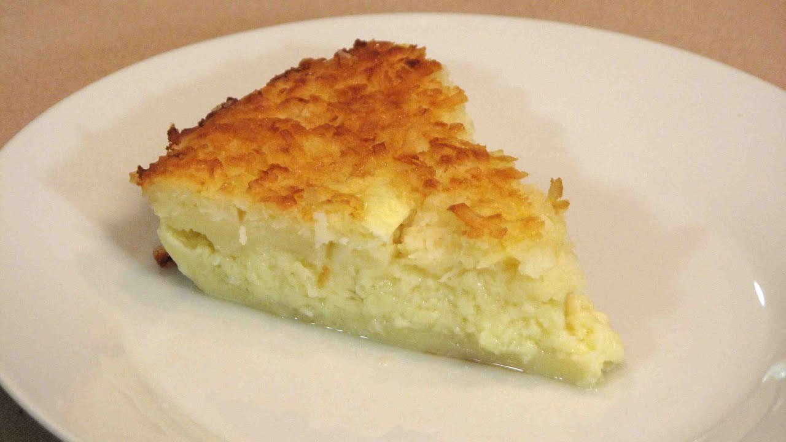

Stolen, March 19th, 2024 9:38 AM
Amount of food created: Two pieces
Costs: you probably have most of these ingredients already
I stole this recipe from the week 9 lab exercise in MSOE's Computer Networking Course. I've never made it, but I'm sure it's delicious.
1. Preheat the oven to 350° and butter two 9-inch glass pie plates.
2. In a large bowl, whisk the melted butter with the sugar. Add the eggs and beat until smooth. Stir in the flour, coconut and milk.
1. Divide the mixture between the pie plates and bake in the lower third of the oven for about 1 hour, until the pies are firm to the touch and golden.
2. Transfer the pies to a rack and cool completely before serving.